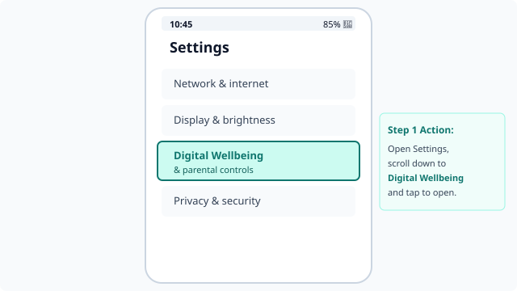
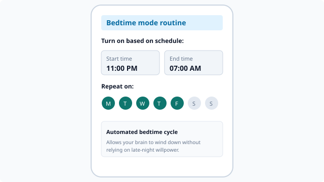
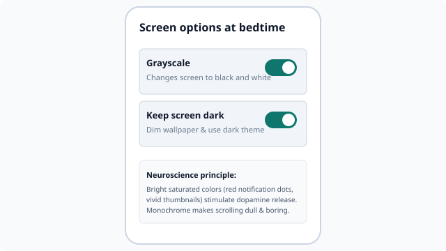
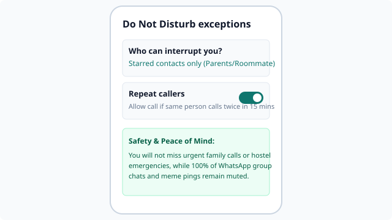
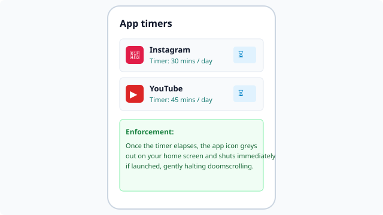
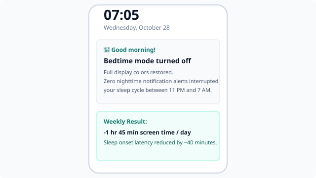

You do not need to download sketchy third-party apps from the Play Store. Android includes enterprise-grade screen time management directly inside your system settings.

Figure 2.1: Locating the native Digital Wellbeing menu inside system settings.
Open Settings on your Android phone, scroll down, and tap Digital Wellbeing & parental controls. (On Xiaomi / MIUI / HyperOS or Samsung One UI devices, this may appear as Digital Wellbeing and parental controls or simply Digital Wellbeing).
Under the "Ways to disconnect" section, tap Bedtime mode. Tap Bedtime routine and select "Turn on based on schedule".

Figure 2.2: Programming your automated night schedule (11:00 PM to 07:00 AM on weekdays).
Configure your timetable:
- Start time:
11:00 PM (or 45 minutes before you intend to sleep).
- End time:
07:00 AM (or your morning alarm time).
- Days: Check Sunday night through Thursday night (or all 7 days for consistent sleep rhythm).
Tap Customize inside Bedtime mode settings. Ensure that the Grayscale toggle is switched ON.

Figure 2.3: Grayscale switch enabled. Stripping color dramatically decreases compulsive visual stimulation.
The Neuroscience Principle: Social media apps employ bright red badge notifications, saturated video thumbnails, and vibrant UI color gradients designed to trigger micro-dopamine hits in human visual pathways. In black-and-white, Instagram reels and YouTube videos look bland, flat, and boring. Your brain naturally loses interest within 3 to 5 minutes, making it easy to put the phone down.
The number one objection students have to turning on Do Not Disturb is: "What if my parents or hostel warden call with an emergency?" Android allows granular bypass rules.

Figure 2.4: Setting up emergency exceptions so parents and critical calls always ring through.
- Inside Bedtime mode, tap Do Not Disturb.
- Tap People > Calls and select "Starred contacts only". Open your Android Contacts app and tap the star icon next to your parents and roommate.
- Toggle "Allow repeat callers" to ON. If anyone calls twice within 15 minutes, the second call will ring at full volume regardless of silence mode.
Return to the main Digital Wellbeing dashboard and tap Dashboard (or App Timers). Locate your top two distracting applications (usually Instagram, YouTube, or Snapchat).

Figure 2.5: Setting reasonable daily timer caps to build healthy boundary awareness.
Tap the hourglass icon next to each app and set a timer: 30 minutes or 45 minutes per day. When your daily quota expires, the app icon grays out on your home screen and will immediately close if tapped, preventing unintentional afternoon scrolling.
When 07:00 AM arrives, your phone automatically deactivates Bedtime Mode, turning off Do Not Disturb and restoring vibrant screen colors without any manual interaction.

Figure 2.6: Seamless morning transition. Full colors return automatically when it's time to wake up.
Check your Digital Wellbeing graph at the end of the first week. Students following this routine typically experience an immediate 1.5 to 2.5 hour reduction in daily screen time, accompanied by significantly better sleep quality.